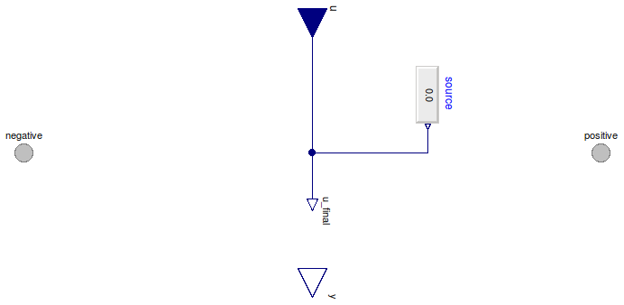
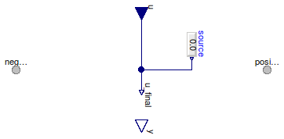

Table of Contents
- User's Guide
- Blocks
- Conditions
- Assemblies
- Regions
- Subregions
- Connectors
- Characteristics
- Units
- Quantities
- BaseClasses
Download
- Latest: FCSys-2.0.zip (**Please check back soon or contact kdavies4 at gmail.com.)

| Name | Description |
|---|---|
| Specify density difference (measure diffusion current), with conservation of material | |
| Specify pressure difference (measure diffusion current) | |
| Current | Specify diffusion current (measure density difference), with conservation of material |
| Custom | Custom |
| Base classes (generally not for direct use) |
 FCSys.Conditions.ByConnector.Face.Pair.Material.Density
FCSys.Conditions.ByConnector.Face.Pair.Material.Density

| Type | Name | Default | Description |
|---|---|---|---|
| ConditionType | conditionType | BaseClasses.ConditionType.De… | Type of condition |
| Specification | |||
| Boolean | internal | true | Use internal specification |
| RealExpression | source | redeclare Modelica.Blocks.So… | Source of internal specification |
| Type | Name | Description |
|---|---|---|
| Face | negative | Negative-side connector to transport material, momentum, and energy of a single species |
| Face | positive | Positive-side connector to transport material, momentum, and energy of a single species |
model Density "Specify density difference (measure diffusion current), with conservation of material" extends BaseClasses.PartialCondition( final conditionType=BaseClasses.ConditionType.Density, u(final unit="N/l3"), final y(final unit="N/T") = negative.Ndot); equation positive.rho - negative.rho = u_final; end Density;
 FCSys.Conditions.ByConnector.Face.Pair.Material.Pressure
FCSys.Conditions.ByConnector.Face.Pair.Material.Pressure
| Type | Name | Default | Description |
|---|---|---|---|
| ConditionType | conditionType | BaseClasses.ConditionType.Pr… | Type of condition |
| Specification | |||
| Boolean | internal | true | Use internal specification |
| RealExpression | source | redeclare Modelica.Blocks.So… | Source of internal specification |
| Type | Name | Description |
|---|---|---|
| Face | face | Connector to transport material, momentum, and energy of a single species |
model Pressure "Specify pressure difference (measure diffusion current)" extends Single.Material.BaseClasses.PartialCondition( final conditionType=BaseClasses.ConditionType.Pressure, u(final unit="m/(l.T2)"), final y(final unit="N/T") = face.Ndot); replaceable package Data = Characteristics.BaseClasses.Characteristic constrainedby Characteristics.BaseClasses.CharacteristicEOS "Characteristic data"; equation Data.p_Tv(positive.T, 1/positive.rho) - Data.p_Tv(negative.T, 1/negative.rho) = u_final; end Pressure;

| Type | Name | Default | Description |
|---|---|---|---|
| ConditionType | conditionType | BaseClasses.ConditionType.Cu… | Type of condition |
| Specification | |||
| Boolean | internal | true | Use internal specification |
| RealExpression | source | redeclare Modelica.Blocks.So… | Source of internal specification |
| Type | Name | Description |
|---|---|---|
| Face | negative | Negative-side connector to transport material, momentum, and energy of a single species |
| Face | positive | Positive-side connector to transport material, momentum, and energy of a single species |
model Current "Specify diffusion current (measure density difference), with conservation of material" extends BaseClasses.PartialCondition( final conditionType=BaseClasses.ConditionType.Current, u(final unit="N/T"), final y(final unit="N/l3") = positive.rho - negative.rho); equation negative.Ndot = u_final; end Current;
The expression to which the condition is applied (x)
must involve negative.rho, positive.rho, negative.Ndot,
and/or positive.Ndot.
Extends from BaseClasses.PartialCondition (Partial model for a normal condition).
| Type | Name | Default | Description |
|---|---|---|---|
| ConditionType | conditionType | BaseClasses.ConditionType.Cu… | Type of condition |
| Specification | |||
| Boolean | internal | true | Use internal specification |
| RealExpression | source | redeclare Modelica.Blocks.So… | Source of internal specification |
| Real | x | positive.rho - negative.rho | Expression to which the condition is applied |
| Measurement | |||
| RealOutput | y | negative.Ndot | Measurement expression |
| Type | Name | Description |
|---|---|---|
| input RealInput | u | Value of specified condition |
| Face | negative | Negative-side connector to transport material, momentum, and energy of a single species |
| Face | positive | Positive-side connector to transport material, momentum, and energy of a single species |
| Measurement | ||
| output RealOutput | y | Measurement expression |
model Custom "Custom" extends BaseClasses.PartialCondition(final conditionType=BaseClasses.ConditionType.Custom, y=negative.Ndot); Real x=positive.rho - negative.rho "Expression to which the condition is applied"; equation x = u_final; end Custom;